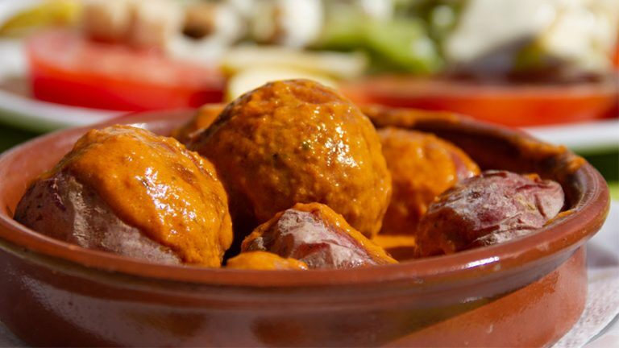
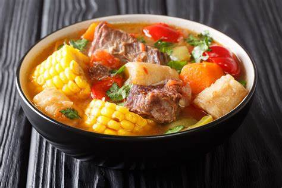
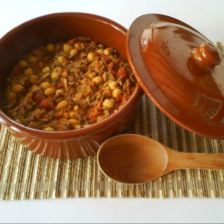
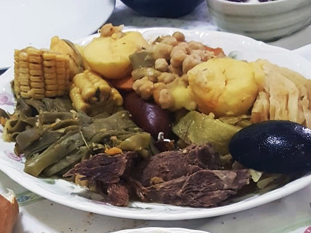
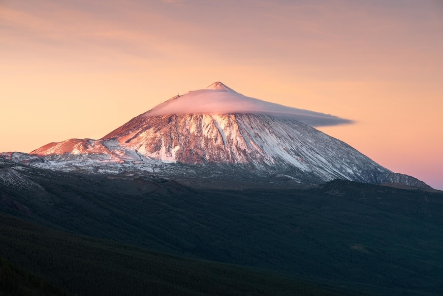
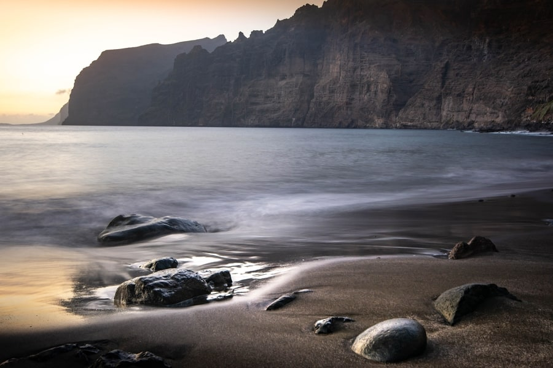
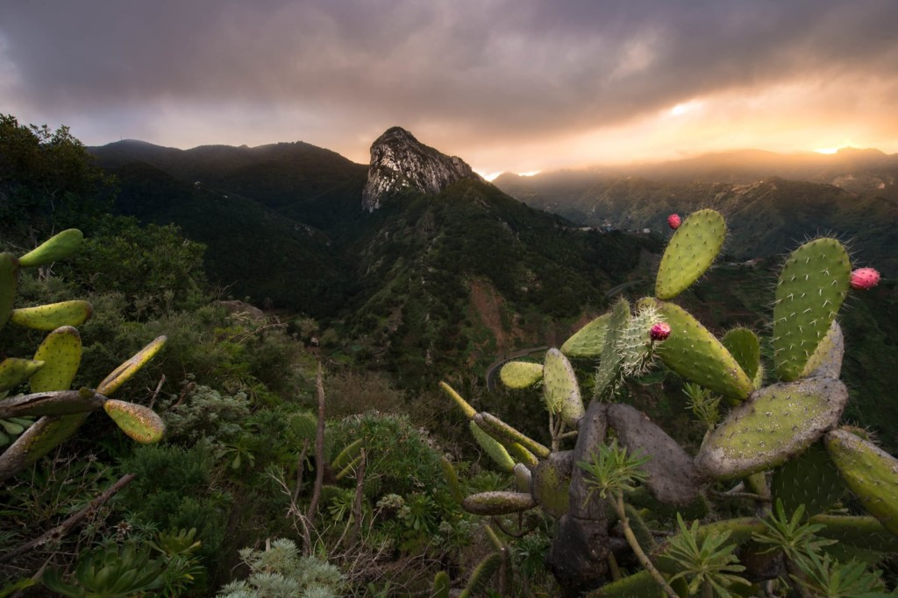
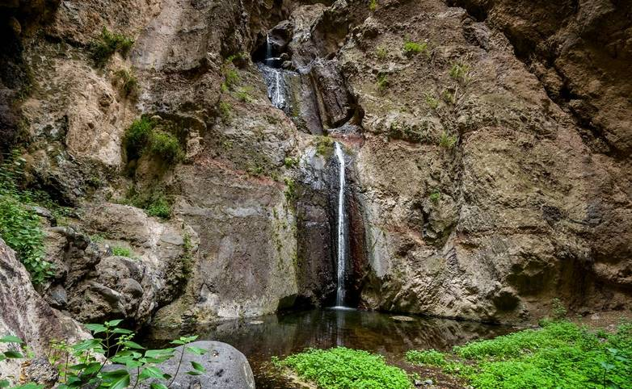

Isla de la Eterna Primavera

Papas arrugadas |
Las papas (patatas) arrugadas son, sin duda, el elemento aglutinador no sólo de la cocina típica de Tenerife, sino de todas las cocinas del archipiélago canario. Un plato sencillo, a base de las patatas negras, de reducido tamaño, que se cultivan en el propio archipiélago. Estas se cuecen con abundante sal, hasta consumirse el agua y adquirir su aspecto “arrugado”. |

Sancocho |
El sancocho es, probablemente, el plato de la cocina típica de Tenerife más sabroso. Se trata de un guiso a base de pescado salado, como cherne, pámpano (un tipo de palometa) o corvina, batata, aceite de oliva y mucho perejil. Todo ello se cuece, en distintos tiempos, para evitar que se desmenuce el pescado, y se sirve con una pella (una porción) de gofio y con el tipo de mojo que más guste a cada comensal. |

Ropa vieja |
La ropa vieja es el mejor ejemplo de lo que puede dar de sí la llamada “cocina de aprovechamiento”. La base de esta receta, una de las estrellas de la cocina típica de Tenerife, es el puchero (o cocido) del que se aprovechan los restos: caldo de cocción, garbanzos, patatas y las carnes de pollo o gallina, cerdo y ternera. Éstas se desmenuzan y se agregan a un sofrito realizado con cebolla, ajos, pimiento y tomate. Más tarde se agregan los garbanzos del puchero, junto con pimentón, laurel, tomillo, orégano, etc. Todo ello se rehoga durante unos minutos y se riega con un poco del caldo sobrante de la cocción. Por último, se sirve acompañado de abundante perejil picado y, si se desea, con unos dados de patatas fritas. |

Puchero canario |
Bastante parecido a otros pucheros españoles, pero con el añadido de la papa canaria, la batata y la piña. Es un plato sano y muy típico en las Islas. |
El Parque Nacional del Teide es Patrimonio de la Humanidad por la UNESCO desde el año 2007 y, además, forma parte de la Red Natura 2000. El volcán Teide es el pico más alto del país con 3718 metros, por lo que no es de extrañar que sea de lo más importante que ver en España. Además, en sus alrededores puedes encontrar especies únicas, como el tajinaste rojo, que crece en primavera, o la violeta del Teide, una flor que solo se puede admirar a más de 2500 metros de altitud. |

Parque nacional del Teide |
Para quedarte sin aliento tienes que ver Los Gigantes, unos acantilados sagrados para los guanches que alcanzan hasta los 600 metros de altura y que están formados por roca volcánica. Tienes varias opciones para disfrutarlos, rutas de senderismo, barco o kayak. Nosotros los visitamos en lancha tras finalizar la ruta de senderismo por Masca, de la cual te hablaré más adelante. |

Acantilados de Los Gigantes |
El Parque Rural de Anaga fue declarado Reserva de la Biosfera y cuenta con tres reservas naturales entre sus límites, el Pijaral, Ijuana y los Roques de Anaga. Hay varios senderos cortos y sencillos que te permitirán disfrutar de su microclima, que incluye no solo los bosques de laurisilva, sino también playas, acantilados y otros paisajes que te van a dejar sin aliento. Por todo esto se le conoce como el “Bosque Encantado”, y es que no hay duda de que es de lo más bonito de Tenerife. Nosotros hicimos una ruta que nos llevó a Afur y a la playa de Tamadiste, terminando en Taganana y, desde luego, que nos enamoró. |

Parque natural de Anaga |
El sendero principal de la Reserva Natural Especial del Barranco del Infierno se puede recorrer en unas 3 horas. Tiene un desnivel máximo de unos 200 metros, por lo que es apto para todo el mundo. Además, los miradores que hay a lo largo del camino y la cascada del final sin duda lo convierten en uno de los senderos más importantes de Tenerife. |

Barranco del Infierno |